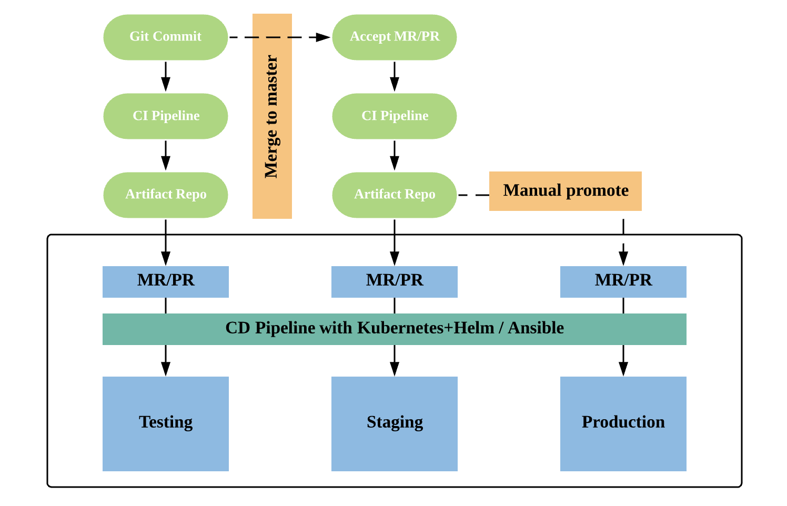

- 00 开篇词 从默默无闻到风靡全球，DevOps究竟有什么魔力？.md.html
- 01 DevOps的“定义”：DevOps究竟要解决什么问题？.md.html
- 02 DevOps的价值：数字化转型时代，DevOps是必选项？.md.html
- 03 DevOps的实施：到底是工具先行还是文化先行？.md.html
- 04 DevOps的衡量：你是否找到了DevOps的实施路线图？.md.html
- 05 价值流分析：关于DevOps转型，我们应该从何处入手？.md.html
- 06 转型之路：企业实施DevOps的常见路径和问题.md.html
- 07 业务敏捷：帮助DevOps快速落地的源动力.md.html
- 08 精益看板（上）：精益驱动的敏捷开发方法.md.html
- 09 精益看板（下）：精益驱动的敏捷开发方法.md.html
- 10 配置管理：最容易被忽视的DevOps工程实践基础.md.html
- 11 分支策略：让研发高效协作的关键要素.md.html
- 12 持续集成：你说的CI和我说的CI是一回事吗？.md.html
- 13 自动化测试：DevOps的阿克琉斯之踵.md.html
- 14 内建质量：丰田和亚马逊给我们的启示.md.html
- 15 技术债务：那些不可忽视的潜在问题.md.html
- 16 环境管理：一切皆代码是一种什么样的体验？.md.html
- 17 部署管理：低风险的部署发布策略.md.html
- 18 混沌工程：软件领域的反脆弱.md.html
- 19 正向度量：如何建立完整的DevOps度量体系？.md.html
- 20 持续改进：PDCA体系和持续改进的意义.md.html
- 21 开源还是自研：企业DevOps平台建设的三个阶段.md.html
- 22 产品设计之道：DevOps产品设计的五个层次.md.html
- 23 持续交付平台：现代流水线必备的十大特征（上）.md.html
- 24 持续交付平台：现代流水线必备的十大特征（下）.md.html
- 25 让数据说话：如何建设企业级数据度量平台？.md.html
- 26 平台产品研发：三个月完成千人规模的产品要怎么做？.md.html
- 27 巨人的肩膀：那些你不能忽视的开源工具.md.html
- 28 迈向云端：云原生应用时代的平台思考.md.html
- 29 向前一步：万人规模企业的DevOps实战转型案例（上）.md.html
- 30 向前一步：万人规模企业的DevOps实战转型案例（下）.md.html
- 期中总结 3个典型问题答疑及如何高效学习 (1).md.html
- 期中总结 3个典型问题答疑及如何高效学习.md.html
- 期末总结 在云时代，如何选择一款合适的流水线工具？.md.html
- 特别放送（一）成为DevOps工程师的必备技能（上）.md.html
- 特别放送（三）学习DevOps不得不了解的经典资料.md.html
- 特别放送（二）成为DevOps工程师的必备技能（下）.md.html
- 特别放送（五）关于DevOps组织和文化的那些趣事儿.md.html
- 特别放送（四）Jenkins产品经理是如何设计产品的？.md.html
- 结束语 持续改进，成就非凡！.md.html
- 捐赠
16 环境管理：一切皆代码是一种什么样的体验？
你好，我是石雪峰。
网上经常流传着一些有关偏见地图的段子，通俗点说，“偏见地图”就是说网友对世界其他地方的印象，比如很多人认为天津人都会说相声。
如果软件开发中也有偏见地图的话，那么，对不熟悉运维的人来说，提到运维团队，可能就觉得是维护环境的那帮人。于是，环境就成了软件行业的“头号背锅侠”。比如，线上出故障了，可以是环境配置错误；测试有些功能没测到，可以是没有测试环境；开发出Bug了，也不管三七二十一，先甩给环境再说……所以你看，好像什么问题都可能跟环境相关。这种没来由的偏见，也加剧了开发和运维之间的不信任。
环境管理的挑战
那么，为啥环境总是让人这么不放心呢？其实，这是因为，现代企业所面对的业务复杂性，很大程度上都可以直观地体现在环境管理的方方面面上。总结起来，我认为一共有5点：
1.环境种类繁多
首先，软件关联的环境种类越来越多，比如开发环境、测试环境、UAT用户验收测试环境、预发布环境、灰度环境、生产环境等。光是分清这些环境的名字和作用，就不是件容易的事情。
2.环境复杂性上升
现代应用的架构逐渐从单体应用向微服务应用转变。随着服务的拆分，各种缓存、路由、消息、通知等服务缺一不可，任何一个地方配置出错，应用都有可能无法正常运行。这还不包括各种服务之间的依赖和调用关系，这就导致很多企业部署一套完整环境的代价极高，甚至变成了不可能完成的任务。
3.环境一致性难以保证
比如，那句经典的甩锅名言“在我的机器上没问题”说的就是环境不一致的问题。如果无法保证各种环境配置的一致性，那么类似的问题就会无休止地发生。实际上，在很多企业中，生产环境由专门的团队管理维护，管理配置还算受控。但是对于开发环境来说，基本都属于一个黑盒子，毕竟是研发本地的电脑，即便想管也管不到。
4.环境交付速度慢
由于职责分离，环境的申请流程一般都比较冗长，从提起申请到交付可用的环境，往往需要2周甚至更长的时间。
一方面，这跟公司内部的流程审批有关。我见过一家企业申请一套环境需要5级审批，想象一下，于一家扁平化组织的公司，从员工到CEO之间的层级可能也没有5级。另一方面，环境配置过程依赖手动完成，过程繁琐，效率也不高，大多数情况下，环境配置文档都属于过时状态，并不会根据应用升级而动态调整，这么一来二去，几天就过去了。
5.环境变更难以追溯
产品上线以后出现问题，查了半天才发现，原来是某个环境参数的配置导致的。至于这个配置是谁改的，什么时间改的，为什么修改，经过了哪些评审，一概不知，这就给线上环境的稳定性带来了极大的挑战和潜在的风险。要知道，环境配置变更的重要性，一点也不亚于代码变更，通常都需要严格管控。
基础设施即代码
你可能会问，有没有一种方法，可以用来解决这些问题呢？还真有！这就是基础设施即代码。可以这么说，如果没有采用基础设施即代码的实践，DevOps一定走不远。那么，到底什么是基础设施即代码呢？
基础设施即代码就是用一种描述性的语言，通过文本管理环境配置，并且自动化完成环境配置的方式。典型的就是以CAPS为代表的自动化环境配置管理工具，也就是Chef、Ansible、Puppet和Saltstacks四个开源工具的首字母缩写。
这个概念听起来比较抽象，那么，所谓基础设施即代码，这个描述基础设施的代码长什么样子呢？我给你分享一段Ansible的配置示例，你可以参考一下。
---
- name: Playbook
hosts: webservers
become: yes
become_user: root
tasks:
- name: ensure apache is at the latest version
yum:
name: httpd
state: latest
- name: ensure apache is running
service:
name: httpd
state: started
无论你是否了解Ansible，单就这段代码而言，即便你不是专业运维或者工具专家，在注释的帮助下，你也大概能理解这个环境配置过程。实际上，这段代码就做了两件事：安装http的软件包，并启动相关服务。
为什么基础设施即代码能够解决以上问题呢？
首先，对于同一个应用来说，各种环境的配置过程大同小异，只是在一些配置参数和依赖服务方面有所差别。通过将所有环境的配置过程代码化，每个环境都对应一份配置文件，可以实现公共配置的复用。当环境发生变更时，就不再需要登录机器，而是直接修改环境的配置文件。这样一来，环境配置就成了一份活的文档，再也不会因为更新不及时而失效了。
其次，环境的配置过程，完全可以使用工具自动化批量完成。你只需要引用对应环境的配置文件即可，剩下的事情都交给工具。而且，即便各台机器的初始配置不一样，工具也可以保证环境的最终一致性。由于现代工具普遍支持幂等性原则，即便执行完整的配置过程，工具也会自动检测哪些步骤已经配置过了，然后跳过这个步骤继续后面的操作。这样一来，大批量环境的配置效率就大大提升了。
最后，既然环境配置变成了代码，自然可以直接纳入版本控制系统中进行管理，享受版本控制的福利。任何环境的配置变更都可以通过类似Git命令的方式来实现，不仅收敛了环境配置的入口，还让所有的环境变更都完全可追溯。
基础设施即代码的实践，通过人人可以读懂的代码将原本复杂的技术简单化，这样一来，即便是团队中不懂运维的角色，也能看懂和修改这个过程。这不仅让团队成员有了一种共同的语言，还大大减少了不同角色之间的依赖，降低了沟通协作成本。这也是基础设施即代码的隐形价值所在，特别符合DevOps所倡导的协作原则。
看到这儿，你可能会说，这不就是一种自动化手段吗？好像也没什么特别的呀。回头想想，DevOps的初衷就是打破开发和运维的隔阂，但究竟要如何打通呢？
在大多数公司，部署上线的工作都是由专职的运维团队来负责，开发团队只要将测试通过的软件包提供给运维团队就行了。所以，开发和运维的自然边界就在于软件包交付的环节，只有打通开发环节的软件集成验收的CI流水线和运维环节的应用部署CD流水线上线，才能真正实现开发运维的一体化。而当版本控制系统遇上基础设施即代码，就形成了一种绝妙的组合，那就是GitOps。
开发运维打通的GitOps实践
顾名思义，GitOps就是基于版本控制系统Git来实现的一套解决方案，核心在于基于Git这样一个统一的数据源，通过类似代码提交过程中的拉取请求的方式，也就是Pull Request，来完成应用从开发到运维的交付过程，让开发和运维之间的协作可以基于Git来实现。
虽然GitOps最初是基于容器技术和Kubernetes平台来实现的，但它的理念并不局限于使用容器技术，实际上，它的核心在于通过代码化的方式来描述应用部署的环境和部署过程。
在GitOps中，每一个环境对应一个环境配置仓库，这个仓库中包含了应用部署所需要的一切过程。比如，使用Kubernetes的时候，就是应用的一组资源描述文件，比如部署哪个版本，开放哪些端口，部署过程是怎样的。
当然，你也可以使用Helm工具来统一管理这些资源文件。如果你还不太熟悉Kubernetes，可以简单地把它理解为云时代的Linux，而Helm就是RPM或者APT这些包管理工具，通过应用打包的方式，来简化应用的部署过程。
除了基于Kubernetes的应用，你也可以使用类似Ansible Playbook的方式。只不过与现成的Helm工具相比，使用Ansible时，需要自己实现一些部署脚本，不过这也不是一件复杂的事情。
你可以看看下面的这段配置文件示例。这些配置文件采用了yml格式，它描述了应用部署的主要信息，其中，镜像名称使用参数形式，会有一个独立的文件来统一管理这些变量，你可以根据应用的实际版本进行替换，以达到部署不同应用的目标。
apiVersion: extensions/v1beta1
kind: Deployment
spec:
replicas: 1
template:
metadata:
labels:
app: demo
spec:
containers:
- name: demo
image: "{{ .Values.image.tag }}"
imagePullPolicy: IfNotPresent
ports:
- containerPort: 80
现在，我们来看看这个方案是如何实现的。
首先，开发人员提交新的代码改动到Git仓库，这会自动触发持续集成流水线，对于常见的版本控制系统来说，配置钩子就可以实现。当代码经过一系列的构建、测试和检查环节，并最终通过持续集成流水线之后，就会生成一个新版本的应用，并上传到制品库中，典型的就是Docker镜像文件或者war包的形式。
以上面的配置为例，假如生成了应用的1.0版本镜像，接下来，会自动针对测试环境的配置仓库创建一个代码合并请求，变更的内容就是修改镜像名称的版本号为1.0。这个时候，开发或者测试人员可以通过接受合并的方式，将这段环境变更配置合入主干，并再一次自动化地触发部署流水线，将新版本的应用部署到测试环境中。每次应用的部署采用相同的过程，一般就是将最新版本的应用制品拷贝到服务器并且重启，或者更新容器镜像并触发滚动升级。
这个时候，测试环境就部署完成了，当然，如果使用Kubernetes，可以利用命名空间的特性，快速创建出一套独立的环境，这是使用传统部署的应用所不具备的优势。在测试环境验收通过后，可以将代码合并到主分支，再一次触发完整的集成流水线环节，进行更加全面的测试工作。
当流水线执行成功后，可以自动针对预发布环境的配置仓库创建一个合并请求，当评审通过后，系统自动完成预发布环境的部署。如果职责分离要求预发布环境的部署必须由运维人员来操作，把合并代码的权限只开放给运维人员就行了。当运维人员收到通知后，可以登录版本控制系统，查看本次变更的范围，评估影响，并按照部署节奏完成部署。而这个操作，只需要在界面点击按钮就可以实现了。这样一来，开发和运维团队的协作就不再是一个黑盒子了。大家基于代码提交评审的方式完成应用的交付部署，整个过程中的配置过程和参数信息都是透明共享的。
我跟你分享一幅流程图，希望可以帮你充分地理解这个分层部署的过程。

那么，GitOps的好处究竟有哪些呢？
首先，就是环境配置的共享和统一管理。原本复杂的环境配置过程通过代码化的方式管理起来，每个人都能看懂。这对于开发自运维来说，大大地简化了部署的复杂度。
另外，所有最新的环境配置都以Git仓库中为准，每一次的变更和部署过程也同样由版本控制系统进行记录。即便仅仅是环境工具的升级，也需要经过以上的完整流程，从而实现了环境和工具升级的层层验证。所以，这和基础设施即代码的理念可以说有异曲同工之妙。
开发环境的治理实践
关于开发环境的治理，我再给你举一个实际的案例。对于智能硬件产品开发来说，最大的痛点就是各种环境和工具的配置非常复杂，每个新员工入职，配置环境就要花上几天时间。另外，由于工具升级频繁和多平台并行开发的需要，开发经常需要在多种工具之间进行来回切换，管理成本很高。
关于这个问题，同样可以采用基础设施即代码的方法，生成一个包含全部工具依赖的Docker镜像，并分发给开发团队。在开发时仅需要拉起一个容器，将代码目录挂载进去，就可以生成一个完全标准化的研发环境。当工具版本升级时，可以重新制作一个新的镜像，开发本地拉取后，所有的工具就升级完成了，这大大简化了研发环境的维护成本。
其实，我们也可以发挥创新能力，把多种工具结合起来使用，以解决实际问题。比如，我们团队之前要同时支持虚拟化设备和容器化两种环境，虚拟化可以采用传统的Ansible方式完成环境部署，但容器化依赖于镜像的Dockerfile。这就存在一个问题：要同时维护两套配置，每次升级的时候也要同时修改虚拟化和容器化的配置文件。于是，为了简化这个过程，就可以把两者的优势结合起来，使用单一数据源维护标准环境。
具体来说，在Dockerfile中，除了基础环境和启动脚本，环境配置部分同样采用Ansible的方式完成，这样每次在生成一个新的镜像时，就可以使用相同的方式完成环境的初始化过程，配置示例如下：
FROM harbor.devops.com:5000/test:ansible
MAINTAINER XX <[email protected]>
ADD ./docker /docker
WORKDIR /docker
RUN export TMPDIR=/var/tmp && ansible-playbook -v -i playbooks/inventories/docker playbooks/docker_container.yml
开发本地测试的实践
其实，我始终认为，环境管理是DevOps推行过程中的一个潜在“大坑”。为了提升开发者的效率，业界也在探索很多新的实践方向。我在前面也给你介绍过快速失败的理念，只有在第一时间反馈失败，才能最小化问题修复成本。而对于研发来说，由于测试环境的缺失，往往要等到代码提交并部署完成之后才能获取反馈，这个周期显然是可以优化的。关于如何解决开发本地测试的问题，在Jenkins社区也有一些相关的实践。
比如，你基于Kubernetes创建了一套最小测试环境，按照正常过程来说，如果改动一行代码，你需要经过代码提交、打包镜像、上传制品、更新服务器镜像等，才能开始调试。但如果你使用KSync工具，这些过程统统可以省略。KSync可以帮你建立本地工作空间和远端容器目录的关联，并自动同步代码。也就是说，只要在本地IDE里面修改了一行代码，保存之后，KSync就可以帮你把本地代码传到线上的容器中，对于类似Python这样的解释型语言来说特别省事。
谷歌也开源了一套基于容器开发自动部署工具Skaffold，跟KSync类似，使用Skaffold命令就可以创建一套Kubernetes环境。当本地修改一行代码之后，Skaffold会自动帮你重新生成镜像文件，推送远端，并部署生效，让代码开发变得所见即所得。研发只需要专注于写代码这件事情，其余的全部自动化，这也是未来DevOps工程实践的一个发展方向。
总结
今天，我给你介绍了企业环境管理的五个难题：种类多，复杂性，一致性，交付速度和变更追溯，并解释了为什么基础设施即代码是解决环境管理问题的最佳实践，还跟你分享了三个基础设施即代码的案例，希望能够帮助你理解这个过程。
如果你不太了解Kubernetes和容器，可能会有些内容难以消化。我想跟你说的是，无论采用什么技术，代码化管理的方式都是未来的发展趋势，建议你结合文章中的代码和流程图仔细梳理一下，并且尝试使用CAPS工具重新定义环境部署过程，将环境配置过程实现代码化。如果有问题，可以及时在留言区提问。
思考题
你认为推行开发自运维的最大难点是什么？关于解决这些难点，你有什么建议吗？
欢迎在留言区写下你的思考和答案，我们一起讨论，共同学习进步。如果你觉得这篇文章对你有所帮助，欢迎你把文章分享给你的朋友。
© 2019 - 2023 Liangliang Lee. Powered by gin and hexo-theme-book.